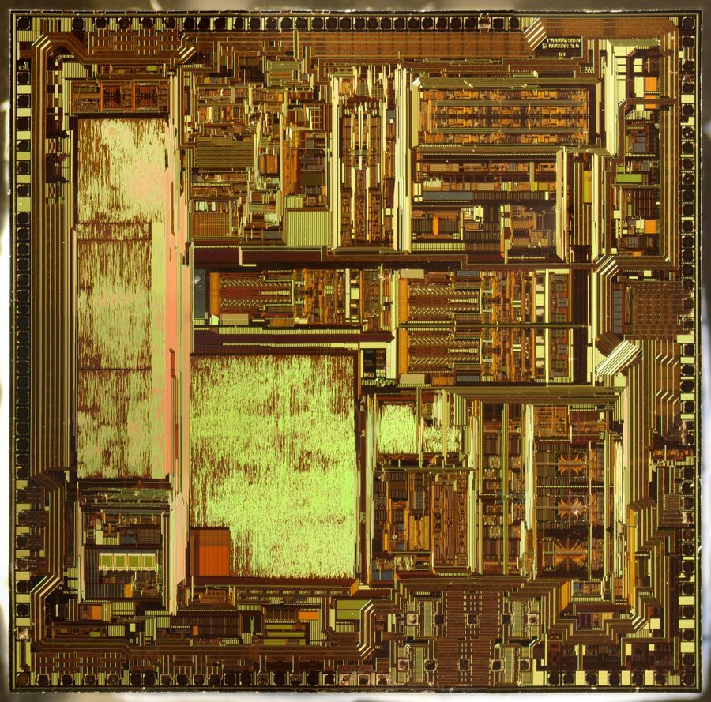

01
엔비디아 AI 칩 대중 밀수 의혹 일파만파
기술실리콘밸리 위장사 통한 유출 정황에 핵심 임원 연루설까지 확산

미국 실리콘밸리에서 엔비디아 AI 칩을 대량 구매한 현지 기업이 중국 기업의 자회사인 것으로 드러나 파장이 일고 있습니다.
여기에 엔비디아 고위 임원이 대중국 반도체 밀수 혐의를 받는 업체 인사와 혼인한 사실까지 밝혀지며 통제 허점 논란이 거세지고 있습니다. 미국의 수출 통제를 우회하는 통로로 실리콘밸리 위장 기업들이 악용되고 있다는 지적이 나옵니다.
엔비디아 경영진이 쇄신 요구를 일축하고 있는 가운데, 미 당국의 조사와 제재 강화 조치가 이어질지 주목됩니다.
참고: 한국경제, 매일경제, 한겨레, 동아일보